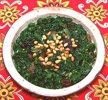

|
Chard with Raisins & Pine NutsSpain - Acelgas con Pasas y Piñones | ||||
| Serves: Effort: Sched: DoAhead: |
4 side ** 1 hr Prep |
This is an excellent side dish of greens, with raisins countering the slight bitterness of the chard. Chard is much used in Spain, and is also very popular across the straits in Morocco. | |||
|
|
14 2 1/3 2 3 1/4 1/2 1/4 |
oz T c cl T c t t |
Chard Leaf (1) Pine Nuts Raisins (2) Garlic Olive Oil ExtV Water Salt Pepper |
Including raisins and pine nuts shows a definite Arab influence. The Moroccans often include lamb with theirs to make it a main dish stew. Prep - (30 min - 15 min work)
|